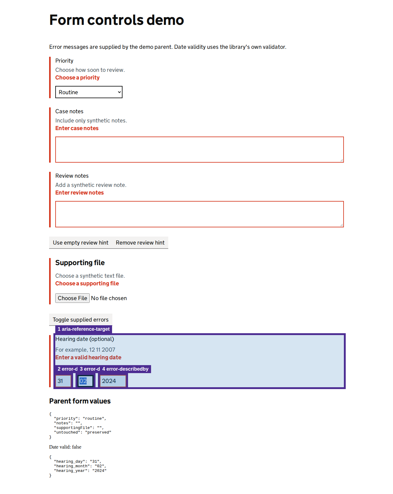

Automated heuristics support investigation; they do not replace screen-reader testing or establish WCAG conformance.
View page screenshot

1. aria-reference-target
aria-describedby references missing id(s): hearing-error.
Selector: fieldset
Inspect DOM snippet
<fieldset class="govuk-fieldset" aria-describedby="hearing-hint hearing-error"><legend class="govuk-fieldset__legend govuk-label--m"> Hearing date (optional) </legend><!--container--><!--container--><span class="govuk-hint" id="hearing-hint"> For example, 12 11 2007 </span><!--container--><xuilib-gov-uk-error-message _ngcontent-ng-c1587765648=""><span class="govuk-error-message" id="passport-error"><span class="govuk-visually-hidden">Error:</span>Enter a valid hearing date </span><!--container--></xuilib-gov-uk-error-message><!--container--><div _ngcontent-ng-c1587765648="" class="govuk-date-input" id="hearing-date"><div _ngcontent-ng-c1587765648="" class="govuk-date-input__item"><div _ngcontent-ng-c1587765648="" class="govuk-form-group"><xuilib-gov-label _ngcontent-ng-c1587765648="" _ngho
2. error-describedby
Invalid controls should reference the visible error message.
Selector: #hearing-day
Inspect DOM snippet
<input _ngcontent-ng-c1587765648="" type="text" value="" pattern="\d*" maxlength="2" class="govuk-input govuk-date-input__input govuk-input--width-2 govuk-input--error ng-invalid ng-dirty ng-touched" id="hearing-day" name="hearing-day" style="">
3. error-describedby
Invalid controls should reference the visible error message.
Selector: #hearing-month
Inspect DOM snippet
<input _ngcontent-ng-c1587765648="" type="text" value="" pattern="\d*" maxlength="2" class="govuk-input govuk-date-input__input govuk-input--width-2 ng-valid govuk-input--error ng-dirty ng-touched" id="hearing-month" name="hearing-month" style="">
4. error-describedby
Invalid controls should reference the visible error message.
Selector: #hearing-year
Inspect DOM snippet
<input _ngcontent-ng-c1587765648="" type="text" value="" pattern="\d*" maxlength="4" class="govuk-input govuk-date-input__input govuk-input--width-4 ng-valid govuk-input--error ng-dirty ng-touched" id="hearing-year" name="hearing-year" style="">